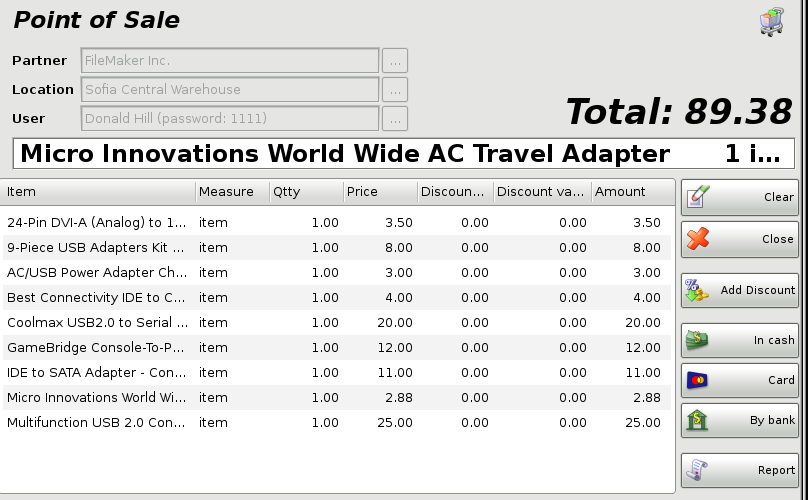
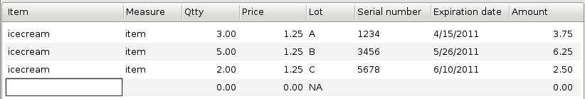
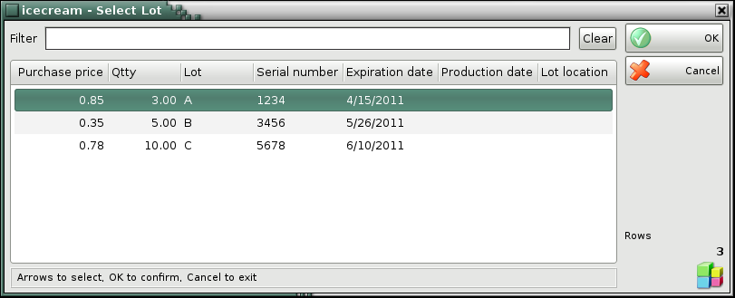

Point of Sale
The Point of Sale window is a highly specialized trade module. It is essentially the same as Sales, but requires detailed data specification and works faster. This facilitates the process and is particularly important in conveyer work � in a store, for example. Quantities of items in the warehouse decrease and company incomes increase.
To fill in the Point of sale window do the following:
The Partner, Location and User fields are filled in only once and they remain filled after the operation is saved. This is done to optimise the work time in the location.
In the Partner field fill in the name of the
customer, who will buy the item.
To select a partner do one of the
following:
- use keyboard shortcut F4 in the partners list;
-
use the Enter key in the partners list;
- type the name of the
partner in the text field;
- type the code of the partner in the text
field.
In the Location field fill in the name or code
of the location, from which items will be taken.
To select a location do one
of the following:
- use keyboard shortcut F4 in the locations
list;
- use the Enter key in the locations list;
- type the name
of the location in the text field;
- type the code of the location in the
text field.
In the User field fill in the name of the
employee, who will perform the sale.
To select a user do one of the
following:
- use keyboard shortcut F4 in the users list;
- use
the Enter key in the users list;
- type the user�s name in the text
field;
- type the user�s code in the text field.
In the Item field fill in the items that the
customer will buy.
To select an item do one of the following:
- use
keyboard shortcut F4 in the items list;
- type the name of the item
in the text field;
- type the code of the item in the text field;
- type
the barcode of the item in the text field.
If you wish to select more than one item, open the items list by pressing the F4 key, hold down the Ctrl key and click the desired items. You can select adjacent items by holding down the Shift key and using the arrow keys.

In the Qtty column fill in the number of items being purchased. The application automatically fills in the Price column. Press Enter to confirm. The application automatically fills in the Amount column. Use the same method to enter data about each item, being purchased by the customer.
To save the document, click one of the In cash, Card and By bank buttons, depending on the payment type.
If you press the F9 key to save the operation, the default payment is in cash.
Click Close or press Esc to cancel the operation.
If you are working with lots, you may enter a lot number, a serial number, manufactured and expiration dates and location of each lot in the warehouse in the point of sale window. Then enter a sale quantity and press Enter. The application will split the quantity by lots, depending on the method set in operations settings. In case you do not provide lot information, the Lot column is filled in automatically with "NA".

If you are working with Choice item management method, then after entering a sale quantity and pressing Enter, the application will open a window that contain all available lots for the selected item. Select a lot and press Enter or click OK button. Then the lot will fill in the point of sale window.

�2006-2015 Microinvest, All rights reserved